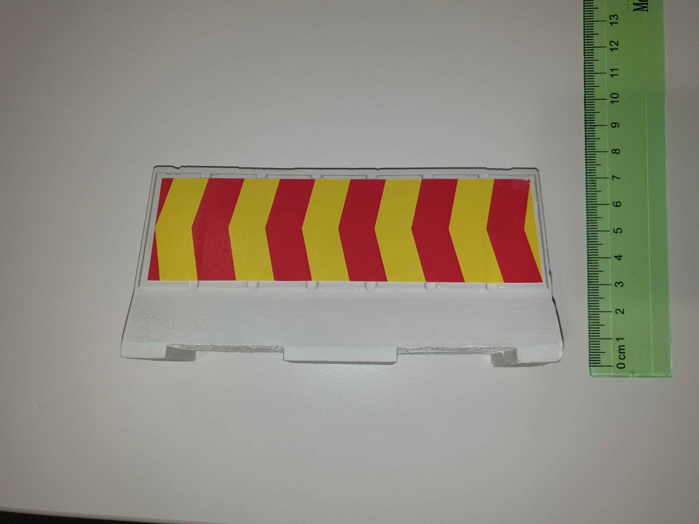
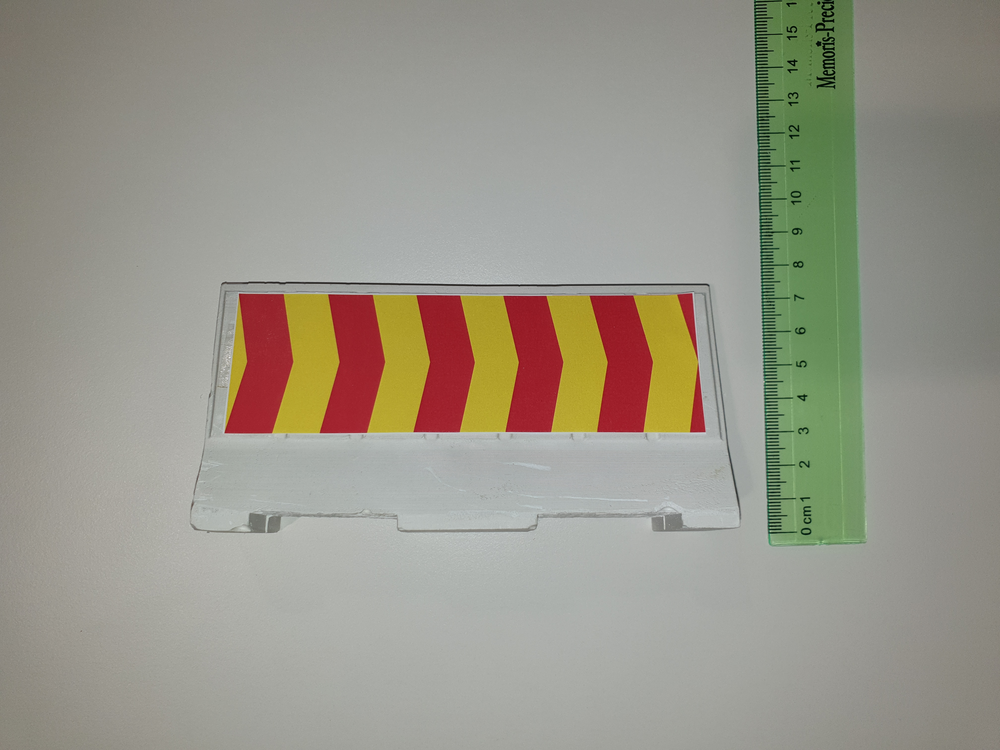
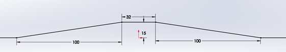

Other elements
Traffic lights
The traffic lights are similar to the real traffic lights with three colors: red, yellow and green. It’s 24 cm heigh and the lights are 4.5cm diameter. You can see on the pictures below:

There will be four semaphores on the race track. One placed at the track entrance, which will signal the start, and three placed in an intersection. Besides showing the appropriate color, they will also broadcast their state via Wi-Fi UDP messages (described in the V2X section).
You can find the link to the traffic light here: traffic light.
Pedestrian
On the race track there will be a human-like pedestrian doll waiting to pass at one of the crosswalks during the run and one crossing on an unsignaled space on the map (if the team choses to have it)
The crosswalk pedestrian is located by the side o the road when the car arrives (right side). The car has to stop and after it stopped the pedestrian will completely cross the road. After the pedestrian crossed the car can continue it’s movement.
The unsignalled pedestrian will be located on the middle of the passing lane of the car. The car has to stop until it leaves the road. The pedestrian can move either to the right or to the left.
Here you can find a picture of pedestrian:

You can find the official link to the store here: pedestrian.
Obstacle vehicles
The obstacle vehicles are robots with different casing than the one of the participants. Videos of various runs, with various views of the cars are available at the links below. There are two types of vehicles: static and dynamic. A static vehicle will be placed on one of each parking type, A static vehicle will be place on each lane of a road section. The team will have to overpass the car on it’s own lane (if the road signaling allows it). A dynamic vehicle will be placed on a highway and one on the one-way&one-lane road (on the country road).
The dynamic vehicles will stream their position via Wi-Fi UDP messages directed to a specific port.
Closed road stand
The closed road stand is positioned on a one way&two lane road, it can be placed randomly on one of the lanes. If the stand is placed on the left lane, it’s arrows are pointing to the right, meaning that at the intersection the car has to go right. If it is placed on the right lane, it’s arrows are pointing to the left, meaning that at the intersection the car has to go to the left.
You can find the label in pdf format at the following link: mark. The mark will be placed on a structure similar to te highway separator, listed in the “3D printed Components”.
This is the mark , place on the separator identical to the highway separator. And here are two pictures of how it looks like:
 {kind=link}
{kind=link}
- And here’s the model:
Ramp
The ramp is covered with the same material as the rest of the track, it’s dimensions can be seen in the picture below:
{kind=link}